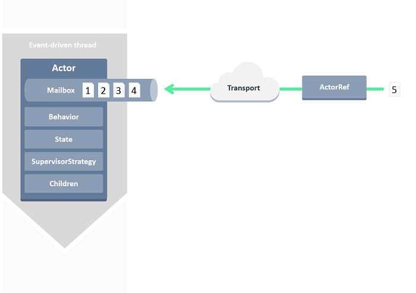

Actor-based concurrency with Akka.NET

Grigoriy Belenkiy
Software engineer, McGraw Hill Financial
@grishace
Denver Dev Day
October 23, 2015
Agenda
- Actor Model
- Akka.NET
- Demo
The free lunch is over!
- Moore's law is no longer in effect
- The new reality: Amdahl’s law

10 years later...
- Still hard to write correct concurrent applications
- Shared mutable state
- Isolation + Immutability
Actor Model
The actor model in computer science is a mathematical model of concurrent computation that treats "actors" as the universal primitives of concurrent computation: in response to a message that it receives, an actor can make local decisions, create more actors, send more messages, and determine how to respond to the next message received.
Carl Hewitt (1973), Wikipedia
Actor Model
- Erlang (first version - 1986, famous AXD301 switch - 1998)
- Part of Scala (2006)

Akka (Typesafe, Inc., 2010)

Akka.NET (Petabridge, 2014-2015)
Actor

Hello, World!
1: 2: 3: 4: 5: 6: 7: 8: |
|
Supervision

One-For-One Strategy
All-For-One Strategy
Demo
Other implementations
- Orleans
https://github.com/dotnet/orleans - PostSharp
http://doc.postsharp.net/actor
commercial product, only 10 classes per project in free version - F# MailboxProcessor
MSDN
included into FSharp.Core
Resources
- JVM Akka http://akka.io
- Akka.NET http://getakka.net
- Akka.NET Bootcamp https://petabridge.com/bootcamp/
Books
 |
 |
|
Akka in Actionby Raymond Roestenburg, Rob Bakker, and Rob Williams |
Effective Akkaby Jamie Allen |
Reactive Messaging
|